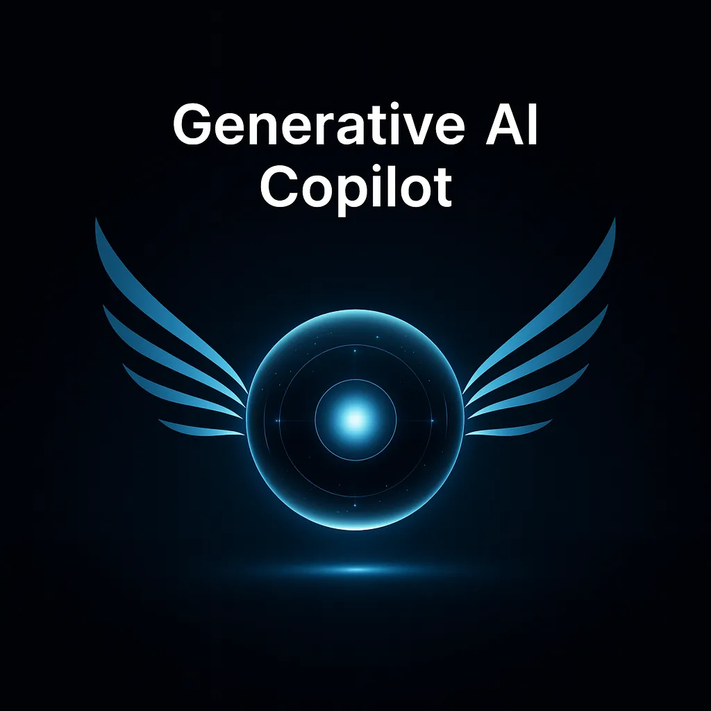
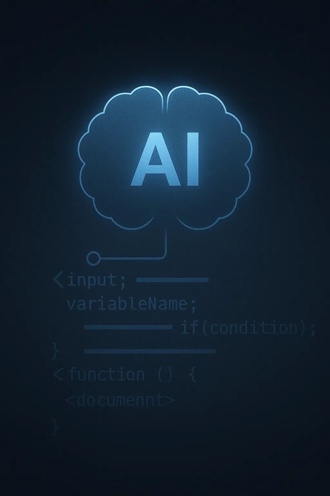

Senior Data Scientist I / McKinsey & Company / IIT Bombay
Anudeep Peela
Machine learning scientist building production GenAI, NLP, search, and decision systems with measurable business impact.
Impact signal
The work is measured in shipped systems, savings, and adoption.
Experience
McKinsey data scientist shipping across complex industries.
Jan 2026 - Present
McKinsey & Company
Senior Data Scientist I
Leading production-grade machine learning and GenAI work across revenue management, quality systems, and operational decision intelligence.
May 2024 - Dec 2025
McKinsey & Company
Data Scientist II
- Designed retrieval-assisted investigation AI using hybrid search and LangChain human-in-the-loop workflows.
- Built an OpenAI Agent SDK cash-reconciliation workflow with custom tool calling, Docker, Terraform, and Azure deployment.
- Developed XGBoost pipelines over 2,000+ sensor tags with PySpark, Azure Data Lake, MLflow retraining, and monitoring.
Jul 2022 - Apr 2024
McKinsey & Company
Data Scientist I
- Built transformer-based NLP pipelines for intent and sentiment analysis across call-center transcripts.
- Fine-tuned StarCoder, Llama 2, and Falcon 40B with LoRA/PEFT on proprietary ABAP datasets.
- Developed CATIA-integrated optimization tooling for engine layout design automation.
2017 - 2022
Indian Institute of Technology Bombay
B.Tech. & M.Tech., Artificial Intelligence specialization
CGPA 8.0/10. Certifications include AWS Certified Machine Learning - Specialty and MLOps Engineering on AWS.
Technical capability
A systems view of the stack.
Organized the way a tech lead evaluates scope: model quality, data foundations, deployment, monitoring, and business feedback loops.
GenAI & Search
RAG, hybrid search, embeddings, semantic retrieval, transformers, LangChain, LlamaIndex, OpenAI Agent SDK.
ML & Statistics
Regression, clustering, XGBoost, neural networks, supervised and unsupervised learning, model interpretation.
Production ML
MLflow, Docker, Kubernetes, Terraform, operational monitoring, daily retraining, evaluation harnesses.
Data Engineering
Python, SQL, PySpark, distributed pipelines, Azure Data Lake, feature pipelines, reconciliation workflows.
LLM Fine-Tuning
StarCoder, Llama 2, Falcon 40B, LoRA/PEFT, proprietary datasets, human refinement loops.
Cloud & Delivery
Azure, AWS, GCP, stakeholder adoption, dashboarding, Plotly Dash, production decision systems.
Selected case studies
Project stories with technical and business signal.

Pharma / Quality AI
Investigation AI Co-Pilot
Designed a retrieval-assisted NLP system using hybrid search over investigation records and LangChain HITL workflows to surface relevant historical evidence for root-cause analysis.
- System
- Hybrid search, RAG, HITL review
- Result
- 90% faster reviews, 96% accuracy, 40% shorter closure, $0.8M/yr savings
Retail banking
Elasticity-Driven Pricing Optimization
Built a production decision system clustering customers by price elasticity to optimize personal and auto-loan pricing while maintaining retention.
- Stack
- Clustering, pricing models, decision systems
- Result
- +$27M annualized revenue
Revenue management
Production Multi-Agent Reconciliation
Built and deployed an agentic cash-reconciliation workflow using OpenAI Agent SDK with custom tool calling, productionized on Azure with Docker and Terraform.
- Stack
- OpenAI Agent SDK, Azure, Docker, Terraform
- Result
- $6.3M/yr estimated savings
Customer operations
Voice Analytics NLP Pipeline
Built transformer-based NLP over call-center transcripts for intent and sentiment analysis, helping redesign IVR and proactive outreach flows.
- Stack
- Transformers, intent analysis, sentiment analysis
- Result
- 30% lower call volume, $5M savings
Automotive
Optimization Engine
Developed a config-driven optimizer integrated with CATIA to automate engine-layout design, including parts allocation and piping.
- Stack
- Python, optimization, CATIA integration
- Result
- 2 months to under 40 minutes

Developer tooling
LLM Fine-Tuning & Code Generation
Fine-tuned StarCoder, Llama 2, and Falcon 40B with LoRA/PEFT on proprietary ABAP datasets, supported by evaluation and human refinement loops.
- Stack
- LoRA/PEFT, StarCoder, Llama 2, Falcon 40B
- Result
- 25-50% legacy code generation automation
Contact
Useful AI, shipped with discipline.
Open to conversations around production GenAI, decision systems, applied ML, and senior data science roles.